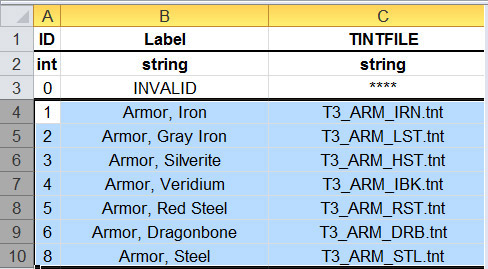
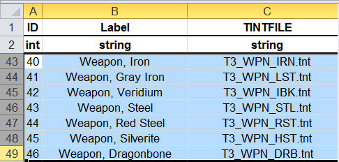
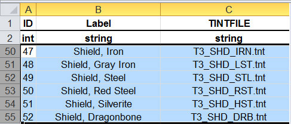

Overriding and creating tints tutorial
The tint system is potentially very powerful, but its results are not always pleasing to everyone. One example in the base game that a number of people dislike is the number of armour and weapon material types (like Red Steel) that are a pinkish-red colour. The colour of a particular material is tied to its tint. What follows is a revised and enhanced version of several forum posts by DarthParametric on how to make armour and weapons more of a traditional metal colour by both replacing default tints with alternative ones that already exist in the game and using completely custom tints.
Contents
How to Create a Tint
Open the toolset. Extract a tint from the tints ERF, similar in format to what you want to create. (hair, skin, tattoo and so on)
Go to File->New->Material. This is the material editor. Right click on the Root object and choose Insert->Insert New Tint Library.
Right click on the new tint library and choose Insert->Insert New Tint Object.
Click on the new tint object and then in the Object Inspector (if it isn’t already open go to View->Other Windows->Object Inspector) look for the Import TNT File line and click the button to the right. Navigate to where you extracted the tint files and load one.
Change the colours to what you want. When you are done, select the tint objects, right click and 'Post Selection to Local'. You may need to change the tint's Export settings to True so it will export.
The tint should now have exported to one of your override folders. Rename it to match other tints of its kind. You don't have to stick to the 3 letter identify naming scheme, but it does need to have a unique name.
Put the tint in your override. Refresh the toolset (View> Refresh) or open and close it. Then create a new morph file or item. It should show up. It will probably need a lot of tweaking to make it look like what you want, so make sure you save the matproject somewhere you can find it again.
Basic Override: Replacing One Set of Tints with Another
The first thing is to open materialtypes.xls located in <install directory>\tools\Source\2DA\rules\ Change to the materialtypes tab. Here you’ll see all the armour and weapon material types and their associated tints. You'll want to find the entries for metal armour, metal weapons, and metal shields. For easy reference, here are the specific rows of interest (click for larger):
 |
 |
 |
| Metal Armour Material Tints | Metal Weapon Material Tints | Metal Shield Material Tints |
{kind=link}
{kind=link}
{kind=link}
Red Steel is obviously going to be the major offender in terms of pink/red colouration, but we’ll extract them all just to be safe. In the toolset directory, run ErfEditor.exe. Go to File->Open File and navigate to <install directory>\packages\core\data\ and select tints.erf and click Open. You’ll see all the game’s tint files. As seen in the 2DA, the tint files we want are prefaced T3_ARM_, T3_WPN_ and T3_SHD_, so scroll down until you find them all. Select (CTRL + left click) the 20 (there is no veridium shield) files we want, then right click and choose Extract Resource. In the pop-up folder browser, just choose somewhere easy to find like the Desktop and click OK.
Now what we are going to do is choose the tint file for one material type that looks appropriately metal-like and overwrite the others with copies of it. Before we do that though we need to see what colours each tint file has. Open the toolset. Go to File->New->Material. This is the material editor. Right click on the Root object and choose Insert->Insert New Tint Library. Right click on the new tint library and choose Insert->Insert New Tint Object. Click on the new tint object and then in the Object Inspector (if it isn’t already open go to View->Other Windows->Object Inspector) look for the Import TNT File line and click the button to the right. Navigate to where you extracted the tint files and load one.
You’ll see in the Object Inspector a whole series of colours, labelled diffuse and specular for the red, green and blue channels. Diffuse is the actual base colour, and specular is the highlights. The channels it is referring to is of the tint map. This has 4 channels (RGB plus Alpha), each of which is a greyscale image that is used to define the area its related tint colour is applied. Refer to the other relevant wiki tint and texture topics for more info.
If you load the tint files for all 7 different material types in turn, you’ll see a number of them have reddish colours. There are two which would be suitable replacements. The first is silverite, the second is steel. Both have bluish grey colours for the most part:
{kind=link}
What you want to do is select one of those and make additional copies of the TNT file, then rename them appropriately (after deleting the originals) to replace the Iron, Grey Iron, Red Steel and Dragonbone tint files. Additionally, you may also choose to replace the Veridium tint file (for armour and weapons), which is a greenish tint, if that is not to your taste. Make sure you only replace a tint file with one of the same type, i.e. only replace armour tints with another armour tint, not a weapon or shield tint (the reason for this is detailed later). Once that is done, create a new folder in My Documents\BioWare\Dragon Age\packages\core\override\ and call it something appropriate (Armour & Weapon Tint Mod for example). Place your tint files in there. Load up the game and try out a formally pink suit of armour. You should get something like this:
{kind=link}
You can see there that Alistair has gone from the original red armour to a proper metal colour.
There are also some additional tints that you may want to look at. If you peruse the rest of materialtypes.xls you'll see that Templar armour uses T3_ARM_TMP.tnt and the king's armour uses T3_ARM_GLD.tnt.
Advanced Tinting 101: Overriding with Custom Tints
As alluded to previously, tint files hold a series of colours that are applied to a model in a manner that is defined by a tint map. Each channel of the tint map is used as a mask to define a specific area of the parent texture to apply the associated tint. While tint maps have four channels (RGB+A), it’s mostly only face textures and related things like tattoos that use all four. Everything else tends just to use the RGB channels.
As you would have seen, the metal material tints extracted previously have a pair of colours, diffuse and specular, for each of the three tint map channels (thus 6 colours in total). The diffuse is what actually colours the base texture, the specular is the “shininess” – the colour of highlights caused by light reflection. A specific type of armour generally shares a single model (well, one model per sex per race, not counting scaled LOD variants). There are usually 4 (occasionally 5) texture variants, and these are diversified further into actual item variations through the use of tints, the colour of which are determined by material type. As an example, I’ll use two texture variants of male medium armour (as with faces, armour models share a common UV map across races, although armour is split into male and female variants, aside from massive armour).
If you haven’t previously unpacked or browsed through the armour textures, you can find them in <install directory>\packages\core\textures\high\texturepack.erf. We’ll use variant A, pm_arm_meda_0d.dds, and variant D, pm_arm_medd_0d.dds. Notice the _0d suffix. This denotes the diffuse map. You’ll see a number of associated textures with the same base filename as the diffuse maps. Those with the _0n suffix are the normal maps, those with _0s are the specular maps, and the ones we want, _0t, the tint maps. Refer to the texture formats page for more info on texture types and filename conventions. Extract the two diffuse maps and the two tint maps to a working directory and open them with something that can handle DDS files.
You’ll see that the diffuse maps are just standard colour textures, albeit a tad dull. The tint maps, at first impression, look to be horrible technicolour nightmares. Change to the channels tab however and you’ll see how they work. Think of each channel as a separate alpha mask. Black is 100% transparency, white is 100% opacity, and shades of grey denote values in between. If we lay out the channels of the tint map as 3 separate images and compare them to the parent diffuse map, we get the following for the two texture variants:
{kind=link}
{kind=link}
If you look at the first image, variant A, you’ll see that the red channel of the tint mask is confined to areas of metal banding, the green channel to other metal areas like buckles and trim, and the blue channel to areas of leather. Variant D is a similar story, the red and green channels being confined to metal, the blue to leather. Because all three classes of metal armour (medium, heavy, massive) use a universal set of tints based on material type, if you look at the other metal armour tint masks you’ll see that this is the pattern that they all more or less conform to – the red channel is the primary metal area tint, the green channel the secondary metal area tint, the blue channel the leather/cloth/misc area tint (the "misc" mostly refers to the massive armours, which don’t have much leather or cloth and mainly use the blue channel for filigree patterns and other decorative effects).
Now that we know what each channel of the tint mask does, we can edit our tint file appropriately. Load the tint file you want to edit into the material editor. I’ll use the dragonbone tint, T3_ARM_DRB.tnt, for this example. Creating tints in the toolset's material editor has already been covered previously, so I won't recount the process here. Instead, I'll cover editing TNT files directly in the GFF editor. You can do this in the toolset (by just going to File->Open and loading the TNT file) but I prefer to use the standalone GFF editor in the toolset directory, GffEditor.exe. You may find it handy to associate this program with all GFF file types so that you can quickly edit a particular file just by double clicking on it. With the TNT file open in the GFF editor, you’ll see something like this:
{kind=link}
Although it’s confusing at first, you’ll see it’s conveying the same basic information as that in the material editor, just in a more concise (and less visually intuitive) format. For a breakdown of the file structure and significance of the values, refer to the TNT page.
Now let’s look at the tint file in the material editor. We’ll use this to tweak the colours to our liking, then copy the values across to the file in the GFF editor. If you click on each colour you’ll get a button on the right that pops up a colour picker for easy tweaking. If you are using the Dragonbone tint file from earlier, it will be using the colour values from the Silverite or Steel tints, which are bluish grey. I don’t know what colour Dragonbone is supposed to be, but for this example I’ll change it to some brownish colours, as follows:
{kind=link}
So now we have our set of colours. You’ll see next to the little colour square, the material editor gives you the RGB V4 values. We need to copy and paste these into the appropriate rows in the GFF editor, remembering to append a 1 to the end. So for example the Red channel value of 0.75,0.74,0.44 gets pasted as 0.75,0.74,0.44,1. If you try and paste just the 3 values, the editor will complain about it not being a proper V4 array. Based on our exploration of the tint masks earlier, we know that the Red and Green channels are for metal, so these get the boney colour we want along with a fairly bright colour for specular. Given that this is supposed to be bone and not metal, I probably should have used a darker colour instead which would give a flatter specular highlight, as opposed to the sharp, close to white, specular highly reflective materials like metal have. However the fact that the intensity value is being reduced to 1 (by just pasting the RGB values directly) should counteract this. The Blue channel gets a darkish brown with a dark specular, as that is for any leather and cloth. Save the TNT file and we are ready to test it in the game. Reusing the example scene from the original tint override:
{kind=link}
OK, so not exactly the most thrilling tint in the world, but hopefully it demonstrates the principle. In particular, notice the reduction in the specular highlights between the two tints as a result of dropping the intensity. If you are trying to make a shiny metal then crank the intensity up, if making cloth, leather or some other flat, dull material (bone?) then crank it down. Adjust your specular colours to suit as well. Generally you want to make it some lighter shade of your diffuse colour, but the more reflective the object and the higher the intensity, the closer to white it should be.